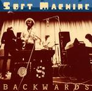

| Artist: | Soft Machine |
| Title: | Backwards |
| Label: | Cuneiform Rune 170 |
| Length(s): | 72 minutes |
| Year(s) of release: | 2002 |
| Month of review: | [10/2002] |
| 1) | Facelift | 18.49 |
| 2) | Moon In June | 7.38 |
| 3) | Esther's Nose Job | 12.55 |
| 4) | Facelift | 8.32 |
| 5) | Hibou Anemone And Bear | 4.00 |
| 6) | Moon In June - Demo | 20.46 |
Moon In june picks up where Facelife left off, being experimental and sax based, although it does get the speed up quite a bit on the way. On the other hand, there's some more tranquil and melodic episodes as well. Towards the end Wyatt's influence shows in his seemingly wordless musings. And do remember: nobody said you can't experiment with a voice either.
Esther's Nose Job has some more organ, aside from the combinations of Dean's sax and Wyatt's vocalistics. This track initially seems to do better at striking a balance between the different disciplines within the band, but as it progresses Dean starts to dominate.
The first of the 1969 tracks, Facelift, has a more open sound musically, but both in sound quality, as in playing this sounds like a rehearsal. These are recordings from the septet period of the band, which was clearly pretty horny with its four brass players. Alongside Dean's attempts than already to dominate, the brass section tends to be a bit high in the mix.
Still clearly SM, Hibou is pretty shrill on the sax.
The opening of Moon In June - demo sounds like exactly what it is: all Wyatt. That melancholy we got to know so much better later is here all the way, his vocals, the organ, the drumming. I have to say, though, that there is a bit more strength in his vocals here than on his solo stuff. As the band kicks in, this track really takes off. Great stuff, and hardly comparable with the other version of the track on this album.